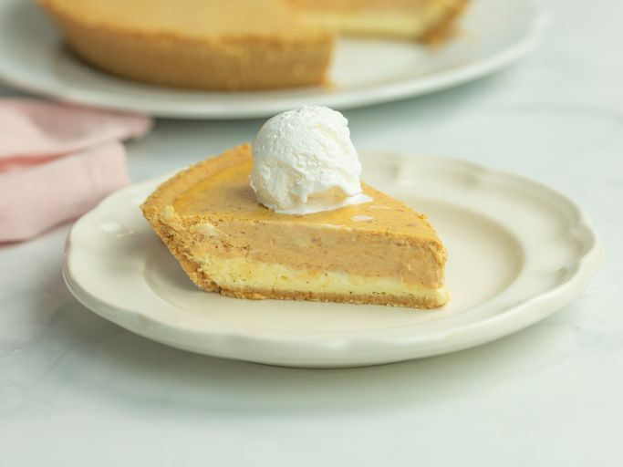

Double Layer Pumpkin Cheesecake

Description
A two layer cheesecake with the bottom layer being made of cheesecake and a top made from a spiced pumpkin
cheesecake and a base made of graham cracker, served best with a scoop of vanilla ice cream.
Ingredients
Cheesecake Layer
- 16 ounces of softened cream cheese
- 1/2 cup white sugar
- 2 large eggs
- 1/2 teaspoon vanilla extract
- 9 inch prepared graham cracker crust
Pumpkin Layer
- 1/2 cup pumpkin puree
- 1/2 teaspoon ground cinnamon
- 1 pinch ground cloves
- 1 pinch ground nutmeg
Steps
- Preheat the oven to 325 degrees fahrenheit
- Beat cream cheese, sugar, and vanilla in a large bowl until smooth. Add eggs one at a time, blending well after
each
- Spread 1 cup batter into the graham cracker crust
- Add pumpkin puree, cinnamon, cloves, and nutmeg to the remaining batter, stir gently until well blended
- Carefully spread on top of plain cheesecake batter in the crust
- Bake until the edges are puffed and the surface is firm, 35-40 minutes
- Remove from oven and cool on a wire rack until room temperature, 1-2 hours
- Refrigerate for at least 3 hours before serving, preferably overnight